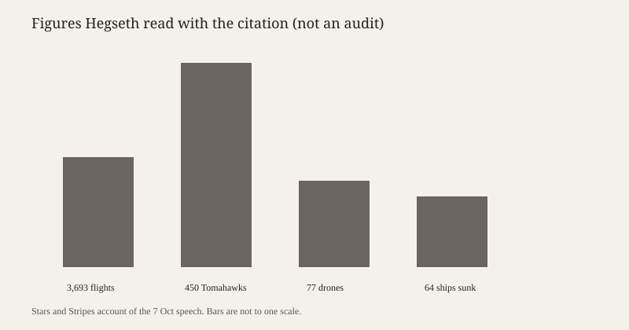

San Diego · U.S. Navy · 8 October 2026
The Abraham Lincoln was due home after Hegseth read a Presidential Unit Citation
_dry_dock.jpg)
What is agreed across desks
The aircraft carrier USS Abraham Lincoln (CVN-72) was scheduled to return to Naval Air Station North Island in San Diego on Thursday 8 October 2026, ending a deployment that began in November 2025 and was redirected from the Pacific to the Middle East. Associated Press copy carried by Gulf News, Stars and Stripes, and ABC News agree on the homeport, on the date, and on a visit the day before by Defence Secretary Pete Hegseth. They agree that Hegseth presented the Presidential Unit Citation, a unit award reserved for extraordinary heroism in action, and that he tied it to combat operations and a maritime blockade during the Iran war, described in the citation language as Operation Epic Fury.
The length of the deployment is reported as a record of uninterrupted days at sea, with 265 the figure in the AP account. Stars and Stripes said the ship had been deployed for 321 days, a different denominator: days since leaving home, not days since the last port. Both can be printed without contradiction if the reader keeps the definitions. ABC said Hegseth told sailors he had extended the deployment twice, against a recent norm of about seven months. Elements of the strike group had already peeled off: Stars and Stripes said the destroyer USS Frank E. Petersen Jr. returned to Hawaii on 28 September, and that some of Carrier Air Wing 9 had already come home.
What is only a quote
The combat totals are a speech and a citation, not an independent battle-damage assessment. Stars and Stripes attributed to Hegseth 3,693 combat flights, 64 Iranian warships sunk, 450 Tomahawk land-attack missiles launched, and 77 one-way attack drones shot down, plus 40 days of continuous combat and a blockade of Iranian ports. The AP account of the citation added 1.37 million pounds of ordnance, 21 anti-ship cruise missiles destroyed, and defence against four fast-attack craft. ABC quoted a different oral list: 10,000 sorties, 23,000 combat flight hours, almost 4,000 combat sorties, and 1.5 million pounds of ordnance. The gaps — 3,693 versus “almost 4,000,” 1.37 million versus 1.5 million — are what unverified round numbers look like when a speaker is addressing a crew. They are not a reason to invent a third figure. They are a reason to label every total as “as read by the secretary.”
Hegseth also said the strike group had kept “crazy people, theocrats” from getting a nuclear weapon, and that the crew had changed “the arc of history.” Those are political claims about the outcome of the war. They are not in the citation’s arithmetic. He pushed back on reporting that the long deployment had become a symbol of dysfunction or low morale. That push-back concedes the existence of the morale story without confirming or denying any particular inspection. No article scored here publishes a Navy inspector-general count of suicides, equipment casualties, or refused liberty.
Mechanism and history a reader needs
A carrier strike group is the ship, its air wing, and the cruisers and destroyers that screen it. The Lincoln’s group included Carrier Air Wing 9. A Presidential Unit Citation is not a medal pinned on one sailor. It is a ribbon the unit wears. It has been given sparingly. Stars and Stripes noted that the Gerald R. Ford group was among at least five units to receive it this year, which is a high rate against the historical pattern and a clue that the award is being used to mark this war’s major formations, not only a single action.
Long deployments have a mechanical cost. Catapults, arresting gear, reactors and airframes accumulate cycles. Sailors accumulate days without a port. The Navy’s public reason for staying out is the operational demand: a blockade and strike campaign cannot be paused for a hull that is the only deck in reach. The public cost is the one Hegseth was answering — reports of deteriorating conditions. A homecoming does not adjudicate that argument. It ends the underway period. What happens to the air wing, the ordnance accounting, and any war-crimes or targeting reviews is a separate paper trail that these homecoming stories do not contain.
For a U.S. reader the useful distinction is between three layers. The movement of the ship is checkable: it left, it fought or was said to fight, it is due in San Diego. The citation is an official act: the secretary presented it. The effect on Iran’s nuclear programme is a claim about a war whose end state is still argued in other coverage this week, including reports that Central Command was told to prepare again for major combat. A unit citation for past days at sea is not a statement that the war is over.
What the story is not
It is not an audit of ships sunk. It is not a finding that morale was high or low. It is not a picture of Thursday’s arrival: the photograph is the same hull in a Newport News dry dock in 1990, a type image of the ship. The chart repeats the citation figures Hegseth read and warns that the bars are not on one scale. Treating those bars as measured outcomes would repeat the speech as if it were a ledger.

Source articles and scores
| Outlet | Headline | T | N | C |
|---|---|---|---|---|
| Stars and Stripes | Abraham Lincoln Carrier Strike Group receives military’s highest unit-level award for valor in battle | 90 | +4 | 70 |
| AP via Gulf News | The long-deployed USS Lincoln is returning home to San Diego | 91 | 0 | 78 |
| ABC News | Hegseth greets USS Abraham Lincoln near the end of record long deployment | 88 | +2 | 68 |
Truthfulness stays high on the homecoming and the ceremony. Complicity drops where the nuclear-weapon sentence and the ship-count are printed as results rather than as the secretary’s reading of a citation. Neutrality moves slightly positive where the frame is valor without the morale reports he was rebutting.